Основная версия
Основная версия фирменного блока бренда NUVIRA. Используется в большинстве носителей и является главным вариантом визуальной идентичности.

2026
Руководство по фирменому стилю бренда «NUVIRA»

Содержание
01 Концепция бренда
В этом разделе описывается смысловая основа бренда NUVIRA: название, миссия, философия, позиционирование, визуальная стратегия, целевая аудитория и тон коммуникации.
Название: NUVIRA.
NUVIRA — авторское название, построенное как мягкий англицизм. Первая часть, NU, отсылает к слову new — «новый»: новый взгляд на тревогу, новый способ заботы о себе, новый шаг к спокойствию.
Вторая часть, VIRA, раскрывает идею освобождения: от внутреннего напряжения, тревожных мыслей и эмоциональной перегрузки. Вместе NUVIRA передаёт смысл бренда: мягкий переход к более свободному и спокойному состоянию.
Название звучит современно, легко запоминается и хорошо работает в цифровой среде: в логотипе, интерфейсе, иконке приложения и на бренд-носителях.
Слоган: Свободен от тревожных мыслей.
Слоган передаёт желаемое состояние пользователя после взаимодействия с приложением. Он фиксирует эмоциональный ориентир бренда: помочь человеку немного освободиться от напряжения, переключиться и почувствовать больше внутренней лёгкости.
Миссия NUVIRA — сделать работу с эмоциями простой, понятной и бережной. Приложение помогает человеку получать мягкую поддержку в течение дня, снижать ситуативную тревожность и постепенно формировать навыки саморегуляции без давления и сложной подачи.
Бережность. NUVIRA не требует от пользователя быть спокойным, продуктивным или «правильным». Приложение принимает разные эмоциональные состояния и предлагает поддержку в комфортном темпе.
Простота. В момент тревоги человеку сложно воспринимать длинные инструкции. Поэтому NUVIRA строит взаимодействие через короткие действия, понятные экраны и быстрый переход к практике.
Поддержка здесь и сейчас. Главный фокус бренда — дать пользователю инструмент, который можно использовать сразу: в момент тревоги, усталости, раздражения или эмоционального перегруза.
Безопасность. Визуальный стиль, интерфейс и тексты не должны усиливать тревожность. Бренд избегает пугающих образов, агрессивных цветов, медицинской холодности и давления.
Регулярность. NUVIRA помогает выстраивать привычку заботы о себе через практики, дневник, статистику и небольшие позитивные действия.
Философия NUVIRA основана на идее: эмоции — это просто.
Эта идея не обесценивает сложные переживания. Тревога, усталость, раздражение и внутреннее напряжение могут быть тяжёлыми состояниями, но взаимодействие с ними не должно быть сложным или пугающим.
NUVIRA помогает подойти к эмоциям мягко: выбрать своё состояние, сделать короткую практику, записать причину тревоги, посмотреть на динамику или переключиться на что-то хорошее.
Бренд не предлагает пользователю «исправить себя». Он помогает сделать маленький шаг в сторону спокойствия. NUVIRA не заменяет специалиста и не ставит диагнозы, а работает как ежедневная точка опоры: помогает в моменте, снижает напряжение и сохраняет важные наблюдения для дальнейшей работы с собой или психологом.
NUVIRA позиционируется как мобильное приложение для мягкой эмоциональной поддержки и быстрой помощи в момент тревоги. Продукт помогает пользователю справляться с напряжением «здесь и сейчас», фиксировать тревожащие ситуации, видеть динамику состояния и постепенно формировать более бережное отношение к себе.
В отличие от сервисов, которые делают акцент только на медитациях, дневниках или аналитике настроения, NUVIRA объединяет несколько поддерживающих инструментов в одном спокойном интерфейсе.
Уникальное торговое предложение NUVIRA — быстрая эмоциональная поддержка в 1–2 действия: пользователь может сразу перейти к практике, зафиксировать тревогу, обратиться к позитивному интерактиву или сохранить наблюдения для дальнейшей работы с психологом.
Практики для быстрой помощи. Короткие упражнения помогают снизить тревожность, переключить внимание и вернуться к более спокойному состоянию.
Дневник тревоги. Пользователь может отметить, что именно вызвало тревогу и когда это произошло. Записи помогают видеть повторяющиеся ситуации и могут быть экспортированы для обсуждения со специалистом.
Статистика состояния. Динамика помогает отслеживать изменения и понимать, какие действия дают больше поддержки.
Добро-журнал. Мини-интерактив, в котором пользователь фиксирует хорошие моменты дня и смещает внимание с тревожных мыслей на позитивный опыт.
Мотивашки. Раздел с мотивационными цитатами на день, который поддерживает пользователя в мягкой и ненавязчивой форме.
Хорошее в мире. Пространство с добрыми новостями и мемами, подобранными специально под эмоциональный тон приложения.
Каталог психологов. Второстепенная функция, которая помогает пользователю перейти от самоподдержки к профессиональной помощи, когда это необходимо.
Визуальная стратегия NUVIRA строится вокруг ощущения спокойствия, принятия и безопасного пространства. Так как приложение связано с тревожностью и эмоциональным состоянием, дизайн не должен создавать дополнительную нагрузку. Его задача — помогать пользователю быстрее ориентироваться и чувствовать себя увереннее.
Основу визуальной системы составляют мягкие пастельные оттенки, округлые формы, крупные отступы, карточная структура и дружелюбная графика. Эти элементы делают интерфейс спокойным, понятным и неагрессивным.
Маскот является важным эмоциональным элементом бренда. Он появляется в практиках и итоговых выводах, поддерживая пользователя в ключевых точках сценария. Его задача — не развлекать и не превращать приложение в игру, а смягчать взаимодействие с тревожной темой и добавлять ощущение присутствия.
Цветовая палитра поддерживает эмоциональный тон бренда. Светлые и розово-лавандовые оттенки создают ощущение мягкости, а синие и фиолетовые тона добавляют спокойствие, устойчивость и доверие. Тёплые акценты используются аккуратно, чтобы направлять внимание на действие без давления.
Визуальная система NUVIRA должна сохранять баланс: быть мягкой, но не инфантильной; современной, но не холодной; эмоциональной, но не перегруженной.
Основная целевая аудитория NUVIRA — молодые взрослые от 18 до 35 лет, которые активно пользуются мобильными технологиями и сталкиваются с тревожностью, усталостью, эмоциональной перегрузкой или сложностями с переключением внимания.
Для этой аудитории особенно важны быстрый доступ к поддержке, спокойный интерфейс, отсутствие сложных инструкций и ощущение, что приложение не оценивает пользователя, а помогает справиться с состоянием в моменте.
Карта персоны 1 — Илья.
Возраст: 29 лет.
Статус: IT-специалист.
Образ жизни: большую часть дня проводит за экраном,
сталкивается с высокой умственной нагрузкой, переработками
и нарушением режима сна.
Проблема: испытывает внутреннее напряжение, усталость
и сложности с концентрацией.
Потребность: понятный инструмент, который помогает
быстро перейти к действию и отслеживать динамику состояния.
Как помогает NUVIRA: даёт быстрый вход в практики,
статистику состояния, дневник тревоги и возможность сохранять наблюдения
для дальнейшего анализа.
Карта персоны 2 — Дарья.
Возраст: 32 года.
Статус: работающая взрослая, совмещает работу, быт
и заботу о семье.
Образ жизни: живёт в режиме высокой ответственности,
часто переключается между рабочими и личными задачами.
Проблема: в моменты тревоги ей нужен простой способ
успокоиться без долгой настройки и лишних действий.
Потребность: мягкий визуальный стиль, короткие практики
и возможность фиксировать повторяющиеся причины тревоги.
Как помогает NUVIRA: предлагает быстрые антистресс-практики,
дневник тревоги, позитивные разделы и каталог психологов как дополнительную
возможность обратиться за профессиональной поддержкой.
Tone of voice NUVIRA — мягкий, дружелюбный, поддерживающий и спокойный.
Бренд говорит с пользователем простым человеческим языком. Он не использует сложные психологические термины без необходимости, не пугает последствиями, не оценивает и не давит. Интонация NUVIRA должна создавать ощущение безопасности: пользователь может быть уставшим, тревожным, раздражённым или растерянным — и всё равно чувствовать, что приложение остаётся рядом.
Бережность. Тексты не должны звучать как приказ или требование. NUVIRA мягко предлагает действие, а не заставляет пользователя немедленно менять состояние.
Краткость. В момент тревоги человеку сложно воспринимать длинные объяснения, поэтому интерфейсные формулировки должны быть короткими, ясными и спокойными.
Отсутствие оценки. Бренд не делит состояния на «хорошие» и «плохие». Он помогает пользователю принять текущее состояние и выбрать подходящий способ поддержки.
Ощущение присутствия. NUVIRA звучит как внимательный друг: не драматизирует, не морализирует, не перегружает советами, а спокойно помогает сделать следующий шаг.
Позитив без токсичности. В разделах с мотивационными цитатами, добрыми новостями и хорошими моментами важно сохранять естественный тон. Бренд поддерживает, но не обесценивает тревогу фразами вроде «просто думай позитивно».
Tone of voice NUVIRA должен быть тёплым, но не слишком детским; спокойным, но не отстранённым; поддерживающим, но не навязчивым.
02 Визуальная система
Раздел объединяет логотип, цвет, типографику, графику, фотостиль и интерфейсные компоненты бренда.
02 Визуальная система
Логотип является главным элементом визуальной идентичности бренда NUVIRA.
Фирменный блок бренда «NUVIRA» состоит из двух элементов: фирменного знака и логотипа.
Фирменный знак представляет собой четыре округлые карточки с эмоциональными образами. Они символизируют разные состояния пользователя и раскрывают идею бренда — «эмоции — это просто».
Мягкие формы и фирменная палитра создают ощущение безопасности, дружелюбия и поддержки. Логотип дополняет знак и формирует образ спокойного цифрового пространства, к которому можно обратиться в момент тревоги.
При использовании фирменного блока необходимо соблюдать правила данного руководства. Недопустимы изменения пропорций, цветов, композиции и других параметров, не предусмотренных брендбуком.
02 Визуальная система. Логотип
В этом разделе показано построение основных вариантов фирменного блока: логотипа, знака и иконки.
Основная версия фирменного блока бренда NUVIRA. Используется в большинстве носителей и является главным вариантом визуальной идентичности.
02 Визуальная система. Логотип
Свободное пространство вокруг логотипа защищает его читаемость и не позволяет другим элементам нарушать восприятие бренда.

Минимальное расстояние вокруг логотипа равно модулю X. В пределах охранного поля нельзя размещать текст, изображения, декоративные элементы или границы макета.
02 Визуальная система. Логотип
Цветовые версии помогают сохранять читаемость логотипа на светлом, фирменном и сложном фоне.
Основная версия логотипа используется на светлом фоне. Она обеспечивает максимальную читаемость и подходит для большинства носителей бренда.
02 Визуальная система. Логотип
Минимальные размеры помогают сохранить читаемость логотипа на носителях.
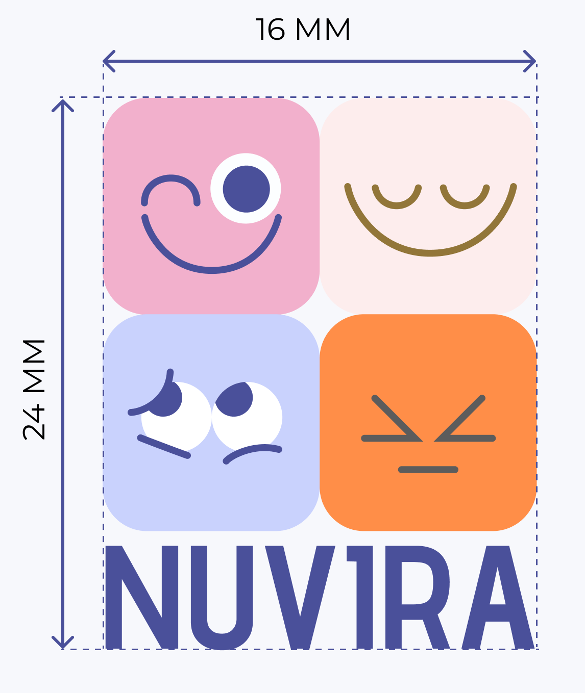
Минимальная ширина основной версии логотипа: 16 мм на 24 мм.
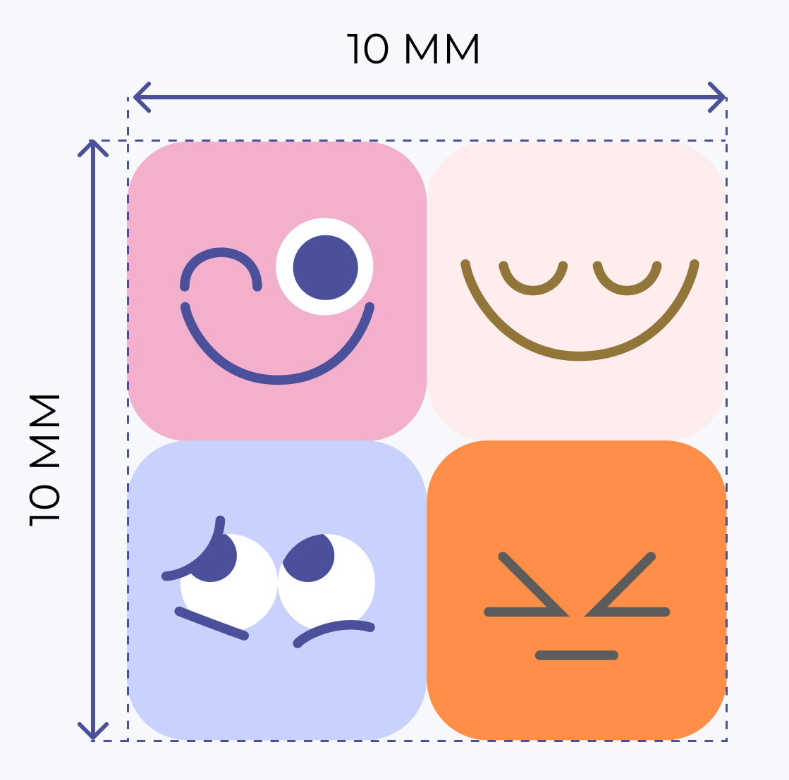
Минимальная ширина фирменного знака: 10 мм на 10 мм.
02 Визуальная система. Логотип
При воспроизведении фирменного блока запрещено:
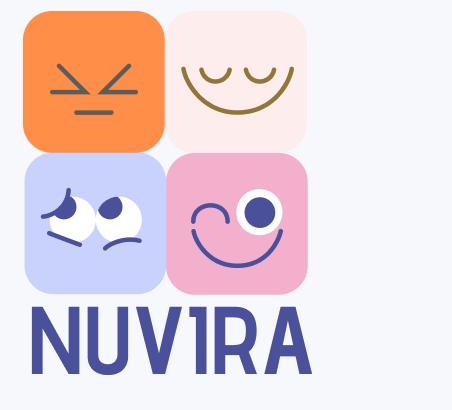
Менять элементы фирменого знака местами.
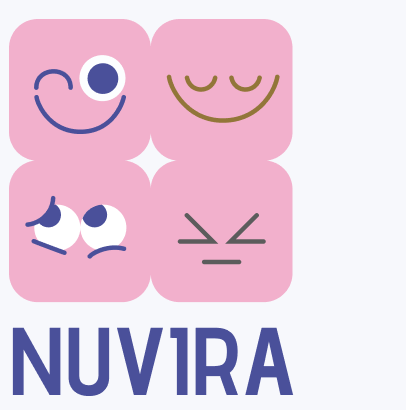
Менять цвет элементов фирменого знака на любой, кроме фирменого темно синего.
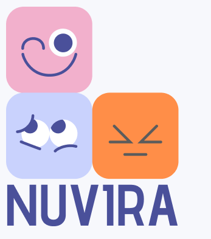
Убирать части элементов фирменого знака.
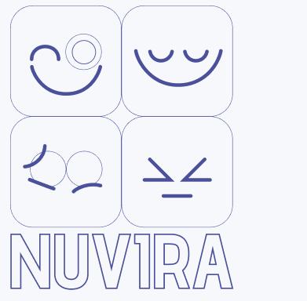
Использовать обводку.
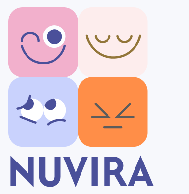
Использоваль любой другой шрифт кроме Advent Pro.
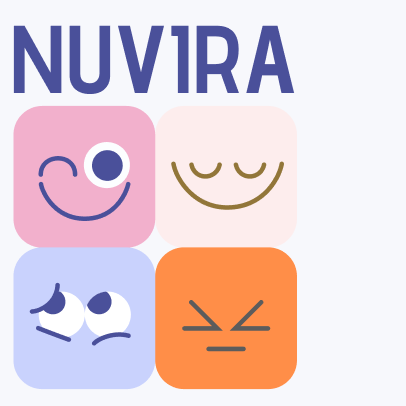
Перемещать шрифтовой блок.
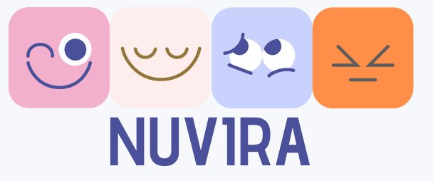
Размещать фирменный знак по горизонтали.
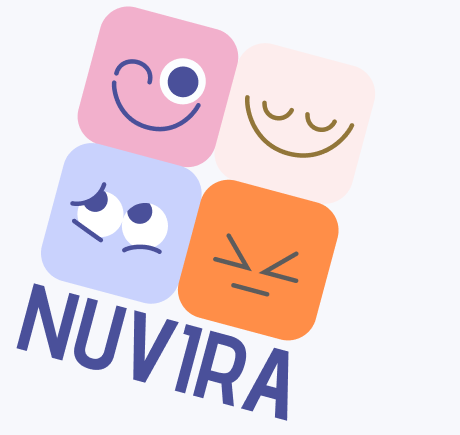
Поворачивать логотип.
02 Визуальная система. Фирменные цвета
Кликни на цвет, чтобы скопировать HEX.
02 Визуальная система. Типографика
Типографика NUVIRA строится на сочетании двух гарнитур: Advent Pro используется для заголовков и акцентных надписей, Montserrat — для наборного текста, интерфейса и описательных блоков.
Эмоции — это просто
Используется для заголовков, крупных акцентов, обложек и выразительных смысловых блоков. Основные начертания — SemiBold 600 и Bold 700. Минимальный размер: 24 px для digital и 18 pt для печати.
Используется для наборного текста, описаний, подписей, кнопок и интерфейсных элементов. Основное начертание — Regular 400. Минимальный размер: 16 px для digital и 12 pt для печати.
02 Визуальная система. Графика и фотостиль
Раздел показывает дополнительные визуальные элементы бренда: паттерн, графические элементы, маскота и принципы фотостиля.

Фирменный паттерн используется как мягкий фоновый элемент. Он помогает создать спокойное, дружелюбное и узнаваемое настроение бренда NUVIRA.
02 Визуальная система
02 Визуальная система. UI Kit
Кликни на цвет, чтобы скопировать HEX.
02 Визуальная система. UI Kit
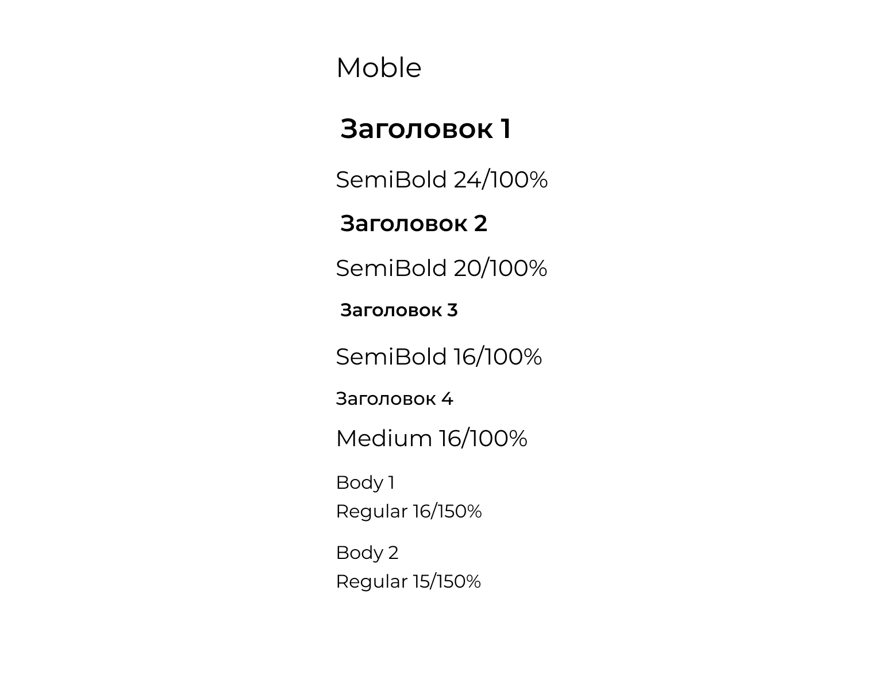
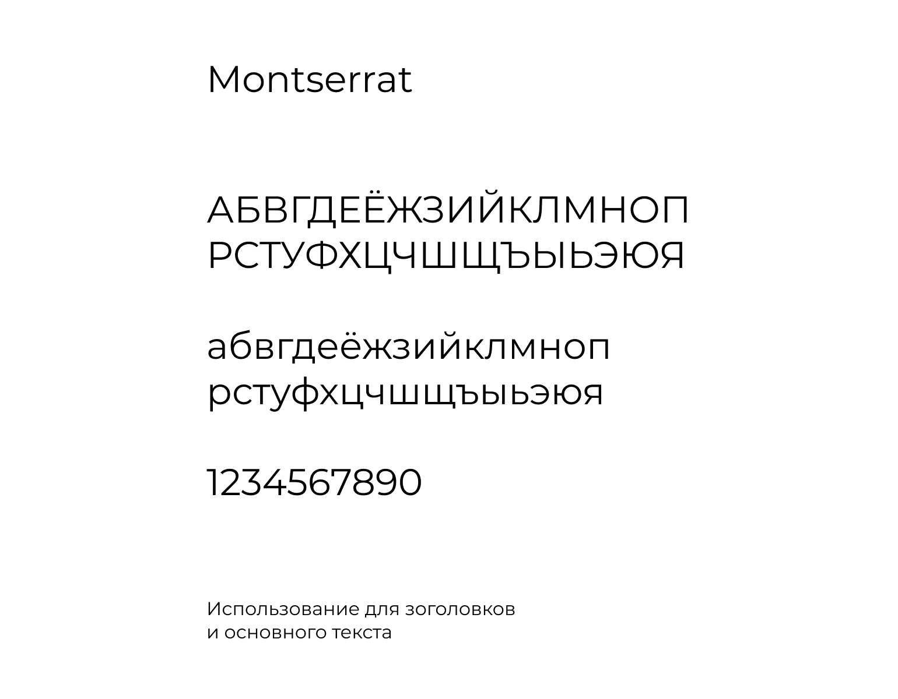
02 Визуальная система. UI Kit
Все отступы и размеры элементов построены на модульной системе с базовым шагом 8 px, что обеспечивает визуальную согласованность интерфейса.
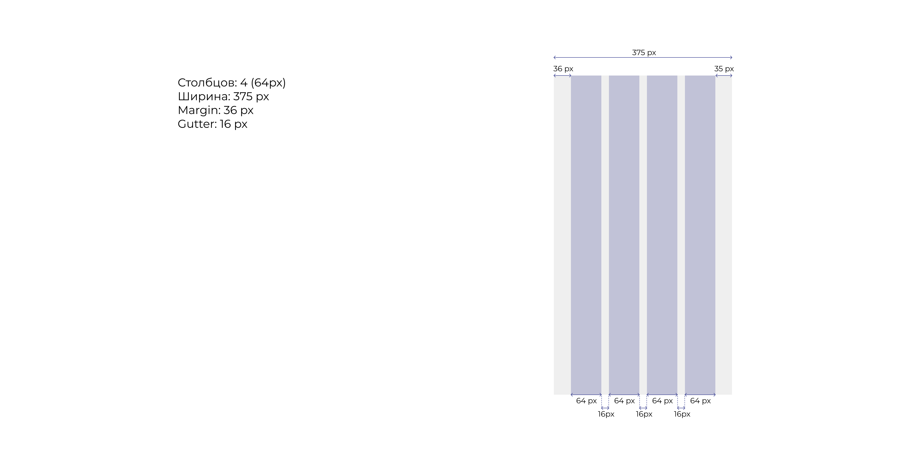
02 Визуальная система. UI Kit
Кнопки используются для управления интерфейсом, переходов между разделами, запуска действий и выбора пользовательских сценариев.
02 Визуальная система. UI Kit
Дропдауны и поля ввода используются в формах, настройках, фильтрах и сценариях, где пользователь вводит данные или выбирает значение из списка.
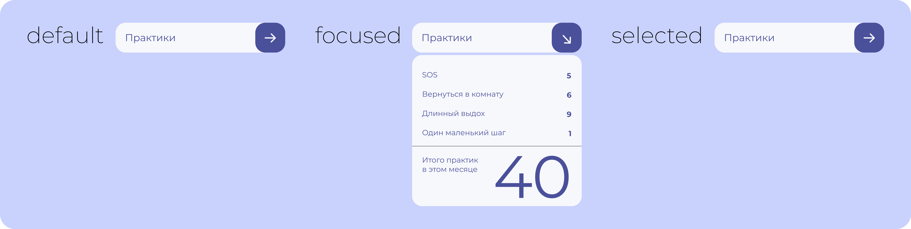
Дропдауны применяются для выбора одного значения из списка. Компонент должен сохранять понятную структуру, мягкие скругления и достаточный контраст между активным, выбранным и неактивным состояниями.
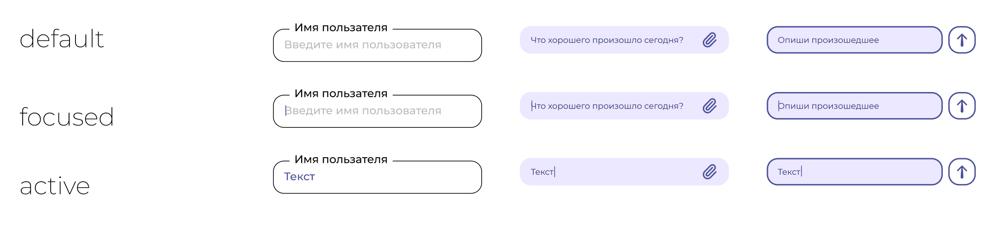
Инпуты используются для ввода текстовой информации, контактных данных и коротких пользовательских сообщений. Важно сохранять читаемость плейсхолдера, заметное состояние фокуса и единый стиль с остальными элементами интерфейса.
02 Визуальная система. UI Kit
Табы используются для переключения разделов внутри одного экрана, а чекбоксы помогают пользователю выбрать один или несколько параметров.
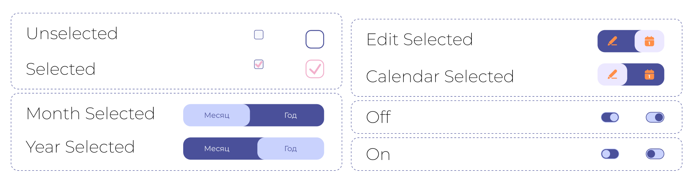
Табы применяются для переключения между связанными разделами без перехода на другую страницу. Чекбоксы используются в формах, фильтрах и настройках, где важно показать выбранное, невыбранное и недоступное состояние.
02 Визуальная система. UI Kit
Карточки используются для группировки информации, навигации и представления отдельных смысловых блоков внутри интерфейса.
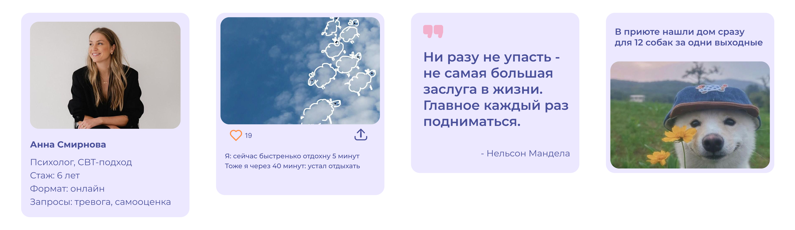
Карточки строятся на мягких скруглениях, спокойном фоне и понятной структуре. Внутри карточки можно размещать заголовок, описание, изображение, кнопку или короткий навигационный элемент. Важно сохранять достаточные отступы и не перегружать карточку лишними деталями.
02 Визуальная система. UI Kit
Всплывающие окна используются для важных сообщений, подтверждений и дополнительной информации без перехода на другую страницу.
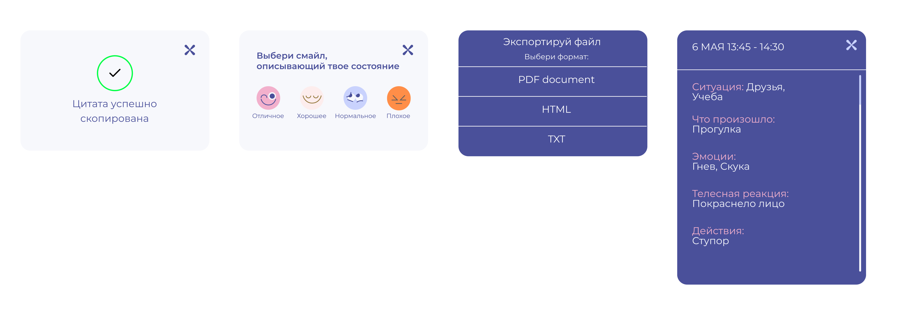
Модальные окна размещаются поверх основного интерфейса и помогают сфокусировать внимание пользователя на одном действии или сообщении. Фон затемняется, а само окно сохраняет фирменные скругления, мягкую цветовую палитру и спокойную структуру.
Модальное окно используется для важных сообщений, подтверждений и дополнительной информации внутри интерфейса NUVIRA.
03 Носители бренда
Носители NUVIRA сохраняют единый образ бренда в digital-среде, печати, мерче и партнёрских материалах.
Внешние носители работают в публичной среде: печати, рекламе, мерче и городских форматах. Они должны быть спокойными, узнаваемыми и не перегруженными деталями.
В оформлении используются фирменные цвета, мягкие формы, крупные отступы, читаемый логотип и короткие поддерживающие фразы.
Блокнот, стикеры, открытки, баннеры, мягкая игрушка, шоппер, маска для сна, футболка, QR-постеры.
Внутренние носители используются в digital-коммуникации бренда и материалах для психологов-партнёров.
Важно сохранять спокойный фон, понятную иерархию текста, фирменные скругления, мягкие акценты и дружелюбный тон.
Шаблоны сторис, карточки App Store, аватар, обложки, визитки, ручки и бейджи партнёров.
03 Носители
Галерея показывает фирменные носители NUVIRA в digital, печатных и предметных форматах.
1–8 из 16
Финал
Работу выполнила: Лебедь Рената Рамисовна
Группа: 4-мд-15
Направление подготовки: Прикладная информатика в дизайне

Интерфейс строится на светлом фоне #F7F8FC, карточках #ECE8FF, основном цвете #4A509A и мягких интерактивных состояниях.
Визитки, бланки, буклеты, упаковка, сертификаты и документы.
Социальные сети, баннеры, презентации, email и сайт.
Вывески, навигация, стикеры, шопперы, форма и сувенирная продукция.
Носитель
Описание носителя.